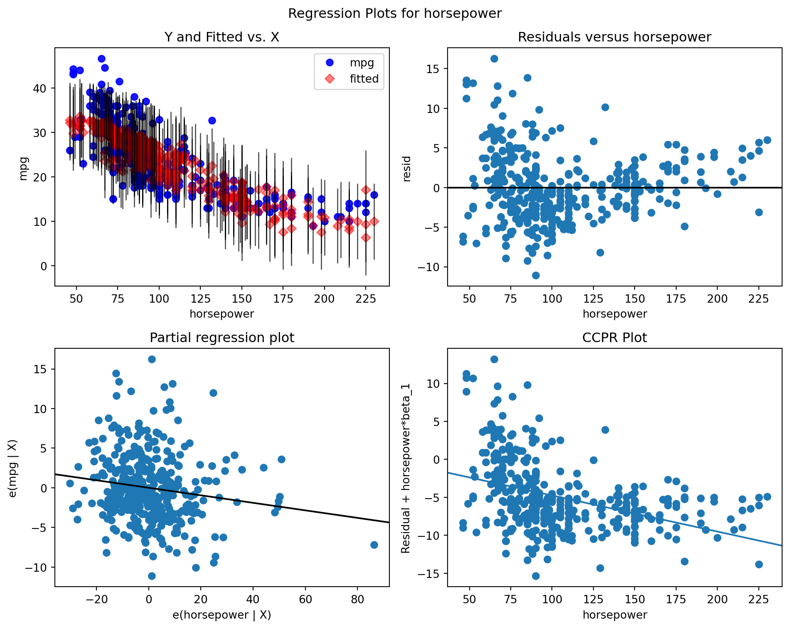
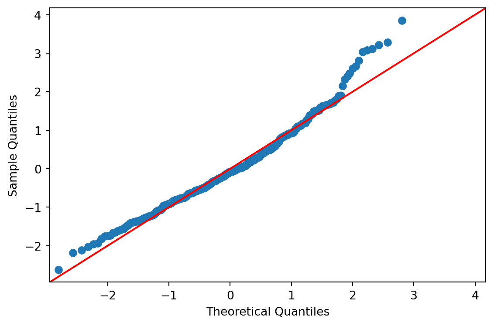
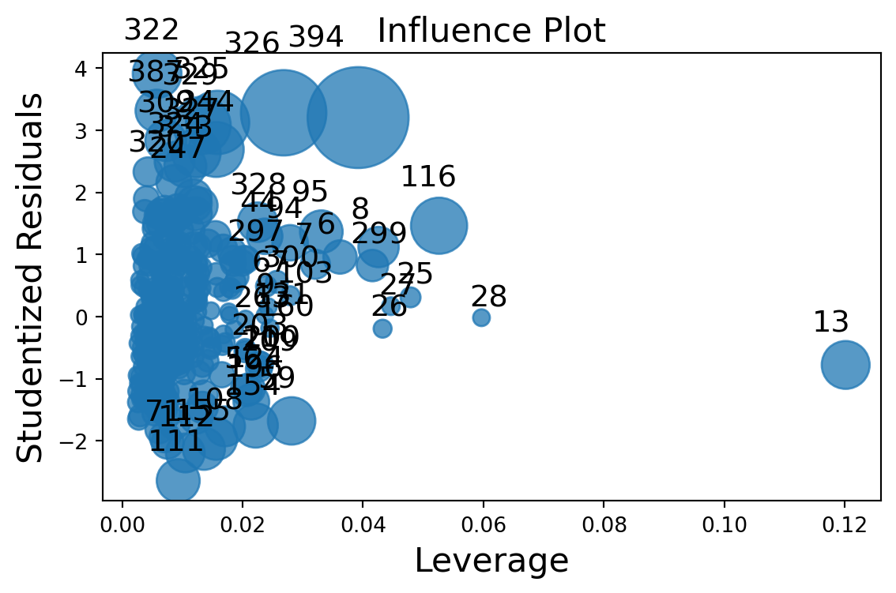

import sys
print(sys.executable)d:\Codes\Notes\sl26\env\Scripts\pythonw.exe\[ \require{physics} \require{braket} \]
\[ \newcommand{\dl}[1]{{\hspace{#1mu}\mathrm d}} \newcommand{\me}{{\mathrm e}} \newcommand{\argmin}{\operatorname{argmin}} \]
$$
$$
\[ \newcommand{\pdfbinom}{{\tt binom}} \newcommand{\pdfbeta}{{\tt beta}} \newcommand{\pdfpois}{{\tt poisson}} \newcommand{\pdfgamma}{{\tt gamma}} \newcommand{\pdfnormal}{{\tt norm}} \newcommand{\pdfexp}{{\tt expon}} \]
\[ \newcommand{\distbinom}{\operatorname{B}} \newcommand{\distbeta}{\operatorname{Beta}} \newcommand{\distgamma}{\operatorname{Gamma}} \newcommand{\distexp}{\operatorname{Exp}} \newcommand{\distpois}{\operatorname{Poisson}} \newcommand{\distnormal}{\operatorname{\mathcal N}} \]
import sys
print(sys.executable)d:\Codes\Notes\sl26\env\Scripts\pythonw.exeLinear regression is the basic supervised learning method for a quantitative response. It models the mean of the response as a linear function of the predictors:
\[ Y = \beta_0 + \beta_1 X_1 + \cdots + \beta_p X_p + \varepsilon. \]
Equivalently, in matrix form,
\[ y = X\beta + \varepsilon. \]
Linear regression is popular because it is:
The most common fitting method is ordinary least squares (OLS). It chooses the coefficient vector \(\beta\) that minimizes the residual sum of squares:
\[ \mathrm{RSS}(\beta) = \sum_{i=1}^n (y_i - \hat{y}_i)^2 = \lVert y - X\beta \rVert_2^2. \]
The OLS estimator is
\[ \hat{\beta}_{\mathrm{OLS}} = (X^\top X)^{-1}X^\top y, \]
provided that \(X^\top X\) is invertible.
Once the coefficients are estimated, the fitted value for observation \(i\) is
\[ \hat{y}_i = \hat{\beta}_0 + \hat{\beta}_1 x_{i1} + \cdots + \hat{\beta}_p x_{ip}. \]
In R, linear regression is fitted with lm():
fit <- lm(y ~ x1 + x2, data = dat)
summary(fit)The formula syntax is convenient:
y ~ x1 + x2 includes two predictors;y ~ . includes all available predictors;y ~ x1 * x2 includes main effects and the interaction;y ~ x + I(x^2) adds a quadratic term.Linear regression can handle more than purely numeric additive effects.
Categorical predictors are represented through indicator variables. If a factor has \(k\) levels, the model usually includes \(k-1\) dummy variables.
Thus, linear regression can compare group means while adjusting for other predictors.
An interaction allows the effect of one predictor to depend on another predictor. For example,
\[ Y = \beta_0 + \beta_1 x_1 + \beta_2 x_2 + \beta_3 x_1 x_2 + \varepsilon. \]
If \(\beta_3 \neq 0\), the effect of \(x_1\) depends on the value of \(x_2\).
We may also include nonlinear transformations such as:
The model remains a linear model because it is still linear in the coefficients \(\beta\).
Interpretation is one of the main strengths of linear regression.
The coefficient \(\beta_j\) represents the change in the mean response associated with a one-unit increase in \(X_j\), holding the other predictors fixed.
When interactions are present, a main effect should not be interpreted in isolation. Its meaning depends on the interacting variables.
A confidence interval gives a range of plausible values for a coefficient or for the mean response at a given predictor combination.
A prediction interval is wider than a confidence interval because it must account for both:
Several tools are commonly used to assess a linear regression fit:
Residual plots help detect:
These diagnostics do not prove that a model is correct, but they help identify important problems.
In multiple regression, several competing predictor sets may be plausible. Model selection compares them using a criterion that balances fit and complexity.
These criteria reward good fit but penalize model complexity.
These tools are useful for comparing models, but they should not replace subject-matter reasoning.
Best subset selection compares all models of a given size and then chooses the best one according to a criterion such as AIC, BIC, adjusted \(R^2\), or \(C_p\).
It is conceptually simple, but it becomes computationally expensive when the number of predictors is large.
Stepwise procedures add or remove variables sequentially rather than searching all possible models.
Common versions are:
These methods are faster than best subset selection, but they are greedy procedures and do not guarantee the globally best model.
If many models are tried and the final model is selected from the same data, p-values and confidence intervals from the final selected model should be interpreted cautiously.
Linear regression is often the first model to try because it is transparent and effective in many settings. However, it has limits.
Strengths:
Limitations:
These limitations motivate later methods such as GLMs, GAMs, ridge regression, and LASSO.
The following example fits an ordinary least squares model in Python using the public mpg dataset from seaborn. It includes model fitting, coefficient tables, confidence intervals, and standard diagnostic plots.
import matplotlib.pyplot as plt
import seaborn as sns
import statsmodels.api as sm
import statsmodels.formula.api as smf
mpg = sns.load_dataset("mpg").dropna()
fit = smf.ols("mpg ~ horsepower + weight + acceleration", data=mpg).fit()
# Main regression table
print(fit.summary())
# Coefficient table and confidence intervals
print(fit.summary2().tables[1])
print(fit.conf_int())
# Fitted values and residuals
diagnostics = mpg[["mpg", "horsepower", "weight", "acceleration"]].copy()
diagnostics["fitted"] = fit.fittedvalues
diagnostics["resid"] = fit.resid
diagnostics["student_resid"] = fit.get_influence().resid_studentized_internal
diagnostics["leverage"] = fit.get_influence().hat_matrix_diag
print(diagnostics.head())
# Standard diagnostic plots
fig = plt.figure(figsize=(10, 8))
sm.graphics.plot_regress_exog(fit, "horsepower", fig=fig)
plt.tight_layout()
fig = plt.figure(figsize=(6, 4))
sm.qqplot(fit.resid, line="45", fit=True, ax=plt.gca())
plt.tight_layout()
fig = plt.figure(figsize=(6, 4))
sm.graphics.influence_plot(fit, ax=plt.gca(), criterion="cooks")
plt.tight_layout()
plt.show() OLS Regression Results
==============================================================================
Dep. Variable: mpg R-squared: 0.706
Model: OLS Adj. R-squared: 0.704
Method: Least Squares F-statistic: 311.1
Date: Wed, 08 Apr 2026 Prob (F-statistic): 7.48e-103
Time: 15:52:54 Log-Likelihood: -1121.0
No. Observations: 392 AIC: 2250.
Df Residuals: 388 BIC: 2266.
Df Model: 3
Covariance Type: nonrobust
================================================================================
coef std err t P>|t| [0.025 0.975]
--------------------------------------------------------------------------------
Intercept 45.6783 2.409 18.965 0.000 40.943 50.414
horsepower -0.0475 0.016 -2.970 0.003 -0.079 -0.016
weight -0.0058 0.001 -10.024 0.000 -0.007 -0.005
acceleration -0.0021 0.123 -0.017 0.987 -0.245 0.240
==============================================================================
Omnibus: 35.392 Durbin-Watson: 0.858
Prob(Omnibus): 0.000 Jarque-Bera (JB): 46.071
Skew: 0.684 Prob(JB): 9.91e-11
Kurtosis: 3.975 Cond. No. 3.48e+04
==============================================================================
Notes:
[1] Standard Errors assume that the covariance matrix of the errors is correctly specified.
[2] The condition number is large, 3.48e+04. This might indicate that there are
strong multicollinearity or other numerical problems.
Coef. Std.Err. t P>|t| [0.025 \
Intercept 45.678293 2.408543 18.965113 3.147407e-57 40.942864
horsepower -0.047496 0.015989 -2.970493 3.158152e-03 -0.078932
weight -0.005789 0.000578 -10.023793 3.500486e-21 -0.006925
acceleration -0.002066 0.123338 -0.016748 9.866463e-01 -0.244560
0.975]
Intercept 50.413722
horsepower -0.016059
weight -0.004654
acceleration 0.240428
0 1
Intercept 40.942864 50.413722
horsepower -0.078932 -0.016059
weight -0.006925 -0.004654
acceleration -0.244560 0.240428
mpg horsepower weight acceleration fitted resid student_resid \
0 18.0 130.0 3504 12.0 19.193008 -1.193008 -0.282190
1 15.0 165.0 3693 11.5 16.437498 -1.437498 -0.340562
2 18.0 150.0 3436 11.0 18.638841 -0.638841 -0.151230
3 16.0 150.0 3433 12.0 18.654144 -2.654144 -0.627861
4 17.0 140.0 3449 10.5 19.039568 -2.039568 -0.483300
leverage
0 0.008441
1 0.011587
2 0.010025
3 0.008624
4 0.011997 


This model treats mpg as the response and uses horsepower, weight, and acceleration as predictors. The output includes the regression table, coefficient table, fitted values, residual diagnostics, a Q-Q plot, and an influence plot.